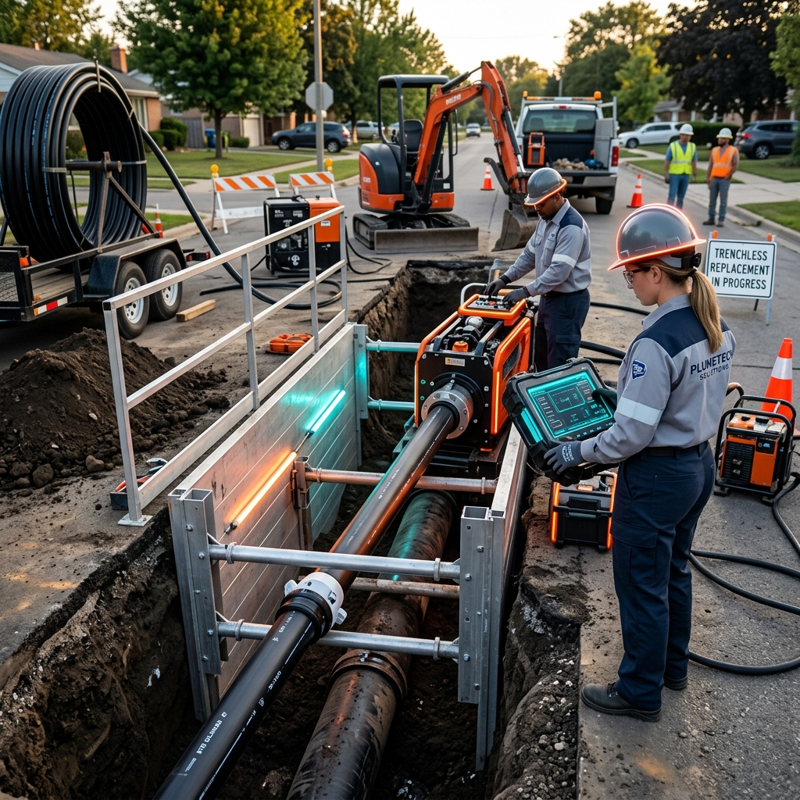

El colapso de la línea de alcantarillado principal es una de las fallas más disruptivas en una propiedad. En Morales Plumbing, ofrecemos reemplazos garantizados para asegurar que las aguas residuales fluyan sin interrupciones por las próximas décadas.
Ya sea a través de excavación tradicional o mediante métodos sin zanja (Trenchless), eliminamos raíces, tuberías fracturadas o colapsadas. Nuestras soluciones de grado municipal aseguran que usted no tenga que lidiar con retrocesos tóxicos de drenaje nunca más.
Este servicio exige un protocolo de diagnóstico riguroso. El técnico debe aislar las líneas, purgar el sistema si es necesario y mapear la firma térmica o el diferencial acústico para justificar la venta de la reparación basándose en los siguientes tres niveles escalonados:
* Al presentar este servicio, el técnico debe enfatizar que la inversión en la detección precisa se amortiza instantáneamente al evitar daños colaterales masivos en la infraestructura de la casa.
← Volver al Catálogo